Vanderbilt · Learning Series · ATD facilitator guide · print edition
Feedback, Ready, the facilitator guide

Run of show
| Screen | Full (min) | Core (min) |
|---|---|---|
| Welcome / QR | 2 | 1 |
| Objectives | 1 | 1 |
| The Chancellor's charge | 3 | <1 |
| Agenda | 1 | — |
| 01 · Prep, not outsource | 8 | 6 |
| Manifesto | 1 | — |
| 02 · The feedback draft (lab) | 8 | 6 |
| 03 · Signals, not surveillance | 8 | 6 |
| Recap quiz | 3 | 3 |
| Capstone · My 1:1 prep card | 5 | 5 |
| Glossary | 1 | — |
| Closing · commitment | 2 | 2 |
| Total | 43 | 30 |
Audience
Part of the CHART Program and the Manager Voyage. People managers and team leads who run 1:1s, give feedback, and want AI's help preparing without losing the human conversation. 8 to 24 works best; the drills run in pairs. Start Smarter helps but is not required; the traffic light from the AI courses is assumed and restated here.
Room setup
Projector plus presenter device; learners on their own devices via the Welcome-slide QR; seating that pairs easily. Virtual: breakouts of 2. This session touches conversations with real people: establish 'roles, never names' in the first minute and repeat it before the lab and the capstone.
Materials
- Projector or large display and the facilitator link open (this edition)
- Facilitator laptop with arrow keys or clicker; all notifications off
- Learner devices (BYOD) joining via the welcome-slide QR
- A few printed cheat sheets (cheatsheet.html) for anyone without a device
- Printed prep cards (worksheet.html) as the no-device fallback
A week before
- Run both editions start to finish, doing every exercise, including the Feedback Prep Lab honestly. You'll be asked what YOUR prep routine is; a real answer plays best.
- Build your own prep card for a real upcoming conversation. You'll show the structure, never the contents.
- Send the pre-work invite (template on this page): bring one upcoming conversation you're not fully looking forward to, held privately.
- Confirm which VU-approved tools your audience actually has access to, so the 'approved lanes' advice is concrete.
The day before
- Test the projector with the facilitator link; confirm the notes rail is readable from where you'll stand.
- Scan the welcome QR with your own phone; it must land on the learner edition.
- Run one round of Prep or Outsource and one full lab pass so you can drive them without looking.
- Print 5 to 10 cheat sheets and prep cards.
30 minutes before
- Welcome slide up as people arrive; it does the enrolling for you.
- Close every other tab; silence the machine.
- Write 'ROLES, NEVER NAMES' where the room can see it all session.
- Test arrow-key navigation and one interaction.
When things go sideways
If Projector or the site fails mid-session: Whiteboard the course: the prep-outsource line, SBI, and the two-question boundary test all draw in seconds. The lab becomes a group walk-through: read each step's options aloud, room votes, you read the coaching. Capstone moves to the printed card.
If Learner devices can't join: Run facilitator-only: trainers play well on the projector with A/B/C hand votes; the capstone moves to paper.
If Someone names a real colleague or starts describing an identifiable situation: Protect them warmly and immediately: 'Hold that. Roles, never names; the exercises work on the pattern, not the person.' If something serious surfaced, route it privately to HR or the EAP at the break, never from the front of the room.
If The room reacts to the surveillance section with 'but my platform offers exactly that feature': Honor it; the tools genuinely do. The answer is the two-question test: aggregate or individual, and would you tell the team? A vendor shipping a feature doesn't make it a good management practice, and VU's approved-tool decisions plus the light set the actual boundary.
If A learner asks whether AI-written feedback is dishonest: Draw the authorship line: structure and phrasing help is the same help a book or a template gives; judgment and examples must be yours, verified. The dishonesty starts where the verification stops: signing an assessment you didn't make.
Tough questions, ready answers
Q: Isn't using AI for feedback just lazy management?
Using it to avoid the conversation is. Using it to prepare is the opposite: the managers who rehearse, structure their observations, and check their drafts for character judgments walk in MORE prepared than the ones who wing it. The lazy version and the diligent version use the same tool; the difference is whether the human conversation got more of you or less.
Q: If I de-identify, can't AI still guess who I mean on a small team?
Sometimes, which is why de-identification is necessary but not sufficient: the second rule is approved VU tools only, where the data handling is contractually governed. Together they cover the realistic risk. And note what de-identification is really for: it forces you to describe behavior and situation rather than person, which makes the feedback better anyway.
Q: My people will find out I used AI to prep. Isn't that a trust problem?
Only if it was a secret. Everything this course teaches survives being said out loud: 'I structured my notes before our 1:1 so I'd be clearer' is diligence, and most people read it that way. The trust problem comes from the practices that need secrecy, which is exactly what the out-loud test screens for.
Q: Where's the line with engagement survey data?
The platform's anonymization is the line, and it's also the deal that keeps surveys honest. Aggregate themes into conversations: always fine. Any attempt to de-anonymize, match writing styles, or narrow by demographic slice until individuals emerge: never, because the first time a team suspects it, honest surveys are over.
Copy-paste templates
Pre-work invite (paste into the calendar invite)
Subject: Before our Feedback, Ready session. One thing to bring: one upcoming conversation you're not fully looking forward to, a piece of feedback you owe someone, a 1:1 that keeps skating on the surface. You will never be asked to name the person or share details; every exercise runs on roles, and everything you type stays on your screen. That's it, no reading, no tools to install.
7-day pulse (send one week after)
Subject: One week later, did the prepped conversation happen? Three quick lines, reply whenever: 1) Did the prep move from your card run before the conversation? 2) What did the prep change about how you listened? 3) Did everything stay de-identified and in approved tools? Replies come to me only.
After the session
Seven days out, send the pulse: 'Did the prep run before the conversation? What did the prep change about how you listened? Did everything stay de-identified and in approved tools?' The count of prepped conversations actually held is the program's headline Level 3 metric.
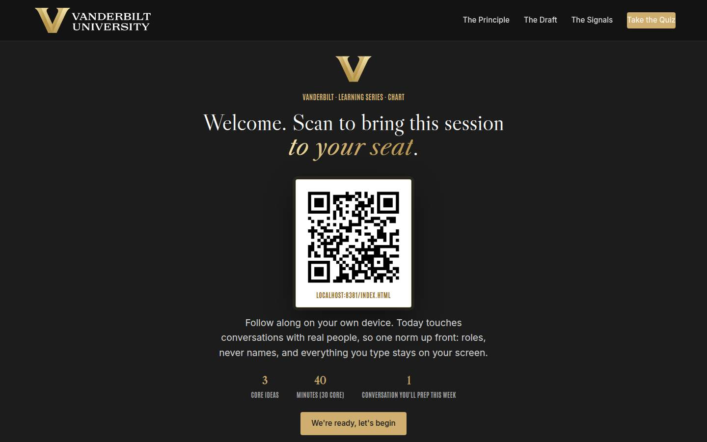
Welcome / QR Full 2 min · Core 1
Get learners into the experience on their own devices and set the norm that makes people-conversation material safe.
Say
“Welcome. Scan the code before we start. Today is thirty-some minutes on one habit: letting AI make you better prepared for the conversations that matter, without ever letting it have them for you. We'll work near real relationships, so the ground rule for the whole session: roles, never names, and everything you type stays on your screen.”
Do
- Slide projected as people arrive; phones up before you speak.
- State the norm once, clearly: roles, never names; typed exercises stay on their screens.
Validate: Most of the room has the deck open; the norm gets a visible nod.
Watch for: Anyone bracing for an AI pitch. The frame: this is a coaching session that happens to use AI for the prep.
Transition: “Here's the contract for the next forty minutes.”
Core path: Core: one scan prompt, the norm stated once, move on.
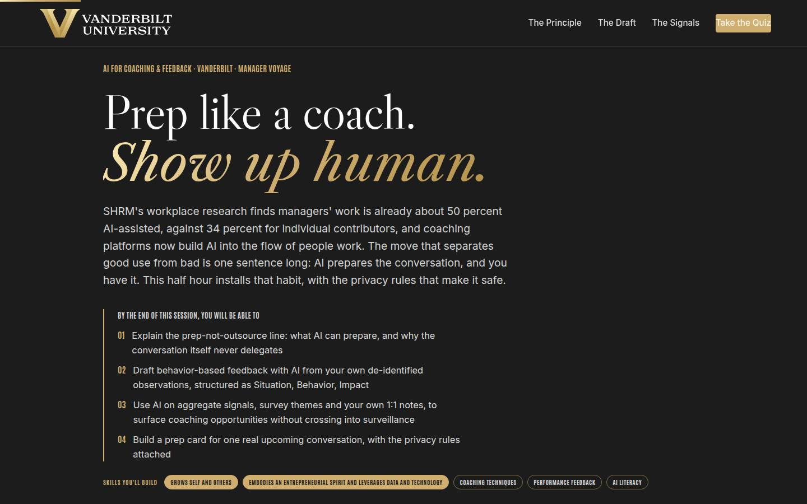
Objectives Full 1 min · Core 1
Set the contract: four capabilities, ending in a prep card for one real conversation.
Say
“Four things by the end: you'll know exactly where the line sits between AI that preps you and AI that replaces you. You'll be able to turn your rough notes into behavior-based feedback, safely. You'll know how to read team-level signals without sliding into surveillance. And you'll leave with a prep card for a conversation you actually have coming.”
Do
- Read the four objectives briskly.
- Name the SHRM stat once: managers' work is already about half AI-assisted, so the question is how well, not whether.
Validate: Learners can say what the capstone is (a prep card for a real conversation).
Watch for: Tool-brand questions; park them, the principles are tool-agnostic.
Transition: “One minute on where this sits in the university's plan, then the three ideas.”
Core path: Core: objectives 1 and 4 out loud.
The Chancellor's charge Full 3 min · Core <1
Anchor the prep-not-outsource habit in the Chancellor's vision so the session reads as institutional work, not tooling.
Say
“Before the three ideas, one minute on why the university cares about your 1:1s. The Chancellor's vision has no hedge in it: Vanderbilt will define the great university of the 21st Century and be it, operating at uncommon speed, agility, and scale. Speed is a feedback problem: at pace, things compound fast, good and bad, and the manager who preps the hard conversation and actually holds it is the one who keeps the operation honest. Dare to grow is the motto; on your team it means daring to say the thing your notes have been telling you for a month.”
Do
- Read the vision sentence off the slide and let it land.
- Walk the three focus areas, one team translation each.
- Point at the flywheel: talent stays where it's coached well, and coached talent is what the reputation runs on.
Validate: Nods at the team-translation lines; no discussion needed here.
Watch for: The urge to teach strategy; this page is a frame, and the three ideas are waiting.
Transition: “Now the three ideas, in order.”
Core path: Core: under a minute; read the vision sentence, gesture at the three focus areas, and move on.
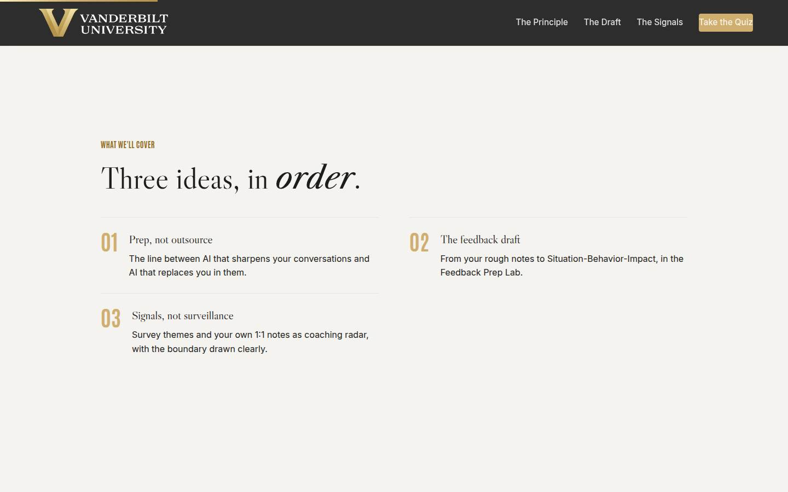
Agenda Full 1 min · Core skip
Orient: principle, practice, boundary.
Say
“The arc: first the line, prep versus outsource. Then the craft: your notes into feedback worth giving. Then the boundary: signals that make you a better coach, and the ones that make you a surveillance program.”
Do
- Walk the three items in one breath each.
Validate: None needed.
Watch for: Don't teach here.
Transition: “The line first, because everything else depends on it.”
Core path: Core: skip; the deck carries it.
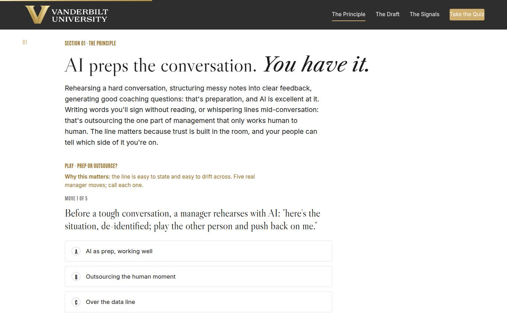
01 · Prep, not outsource Full 8 min · Core 6
Install the prep-outsource line and the data rules (de-identify, approved tools) that make AI-assisted people work safe.
Say
“Here's the whole course in one line: AI preps the conversation, and you have it. Rehearsing the hard conversation with AI pushing back? Prep, and it works. Structuring your messy notes into clear feedback? Prep. Sending words you didn't read, or glancing at suggested empathy lines mid-1:1? That's outsourcing the only part of this job that had to be you. And before any of it: the traffic light still runs. This work sits next to red-light data, private information about people. So two rules with no exceptions: de-identify first, roles never names, and stay in approved VU tools.”
Do
- Land the principle in one sentence: AI preps the conversation; you have it.
- Run Prep or Outsource on devices, or as room votes; five moves, call each.
- Walk the traffic light card and be unambiguous: people work lives next to red. De-identify, approved tools only, behavior not character.
- Run the pair activity: one prep task you'd hand AI, one you never would; where does the 'never' start?
Ask
“Where's your line? Name one conversation-prep task you'd happily hand AI, and one you never would.”
Expect:
- Drafting and structuring on the 'happily' side
- The conversation itself, condolences, personal news on the 'never' side
- Someone confesses a practice that's over the data line
Respond: For the confession, warmly: 'Right instinct, wrong input. De-identify it and move it to an approved tool, and it becomes one of the best practices in the room.'
Debrief: The line: prep leaves you more present; outsourcing leaves you less. And the light outranks everything: de-identified, approved lanes, behavior not character.
Validate: 4+ of 5 on the trainer; the room can recite the two data rules unprompted.
Watch for: The learner proud of a practice that's actually over the line. Correct the practice, not the person: 'that instinct is right, the input is the problem; de-identify and it's a great move.'
Transition: “One sentence to hold, and then the craft.”
Core path: Core: trainer as fast room votes, traffic light at full strength, pair activity becomes a 30-second solo list.
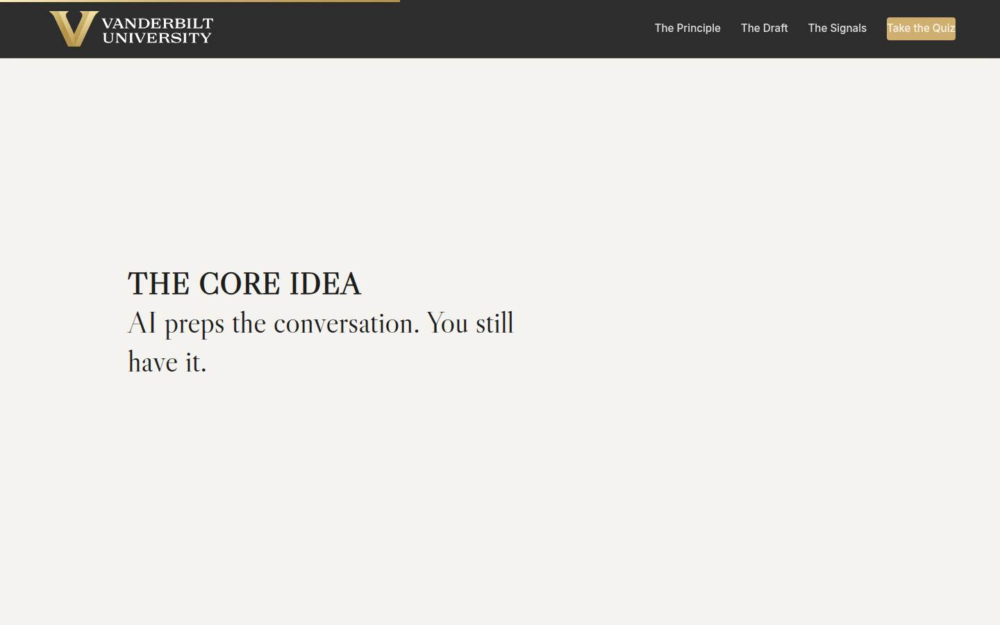
Manifesto Full 1 min · Core skip
One beat of stillness on the core idea.
Say
“AI preps the conversation. You still have it.”
Do
- Let the line animate; say nothing until it finishes, then read it once.
Validate: None; pacing.
Watch for: The urge to talk over it.
Transition: “Now the most useful fifteen minutes of prep a manager can run: the feedback draft.”
Core path: Core: skip; say the line as you pass it.
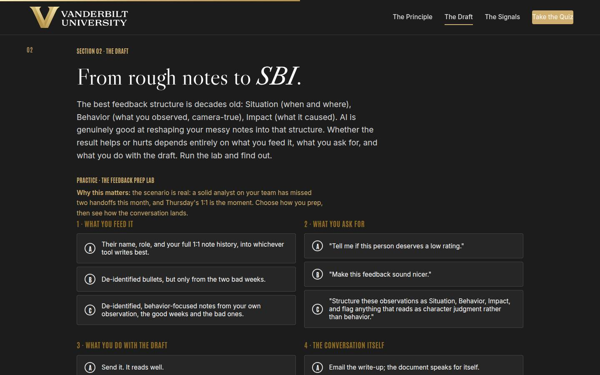
02 · The feedback draft (lab) Full 8 min · Core 6
Install SBI as the structure and run every learner through the Feedback Prep Lab: input, ask, rewrite, conversation.
Say
“The best feedback structure is decades old: Situation, when and where. Behavior, what you observed, described so a camera would agree. Impact, what it caused. AI is genuinely good at reshaping your messy notes into that structure, and it will just as happily draft a character verdict with confident polish. The lab in front of you is the whole discipline in four choices: what you feed it, what you ask for, what you do with the draft, and what happens in the room. Choose honestly; the outcome shows you Thursday.”
Do
- Teach SBI in one line each: Situation (when and where), Behavior (camera-true), Impact (what it caused).
- Set the lab scenario: a solid analyst, two missed handoffs, Thursday's 1:1. Send them in.
- Let learners get their outcome; ask for tier hands. Have one weak-tier learner read their coaching aloud.
- Push the rerun for anyone below strong.
- Run the quick check (what the Behavior line contains) and, time permitting, the verdict-conversion pair drill from Go deeper.
Ask
“For those below strong: which single choice cost you the conversation, and is it the one your real Thursday self would have made?”
Expect:
- The unverified send: 'it read well'
- The skewed input: only the bad weeks
- An honest 'my real prep is the weak version of this'
Respond: Treat the honest answer as the win: 'That recognition is the lab working. The fix is one pass: verify, rewrite in your voice, cut what you wouldn't say to their face.'
Debrief: The division of labor: AI structures, you judge. Input de-identified, ask includes the character-flag, draft gets the rewrite pass, and the room gets all of you.
Validate: Every learner completes a lab run; most reach strong on a rerun; the quick check lands (camera-true behavior).
Watch for: Learners who breeze the lab by picking the longest option. Re-engage: 'which of these steps would you actually skip on a busy Thursday? That skip is your real risk.'
Transition: “That's the conversation you knew you needed. The last section finds the ones you're missing.”
Core path: Core: SBI in one breath, one lab run (rerun only for weak tier), quick check stays, pair drill cut.
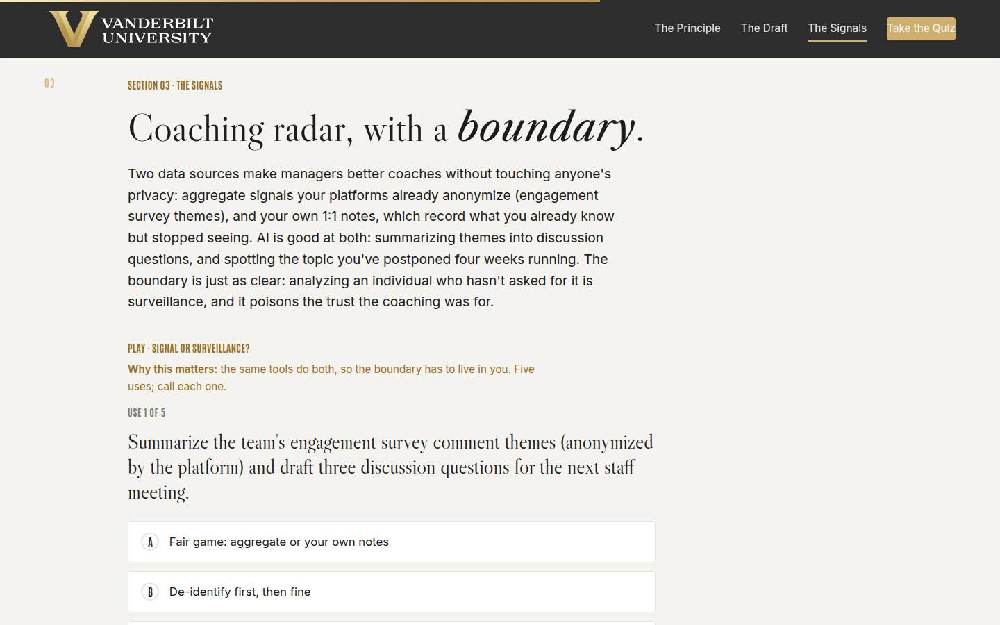
03 · Signals, not surveillance Full 8 min · Core 6
Teach the two safe signal sources (aggregate themes, your own 1:1 notes) and install the two-question boundary test against surveillance.
Say
“Two data sources make you a better coach with nobody's privacy touched. Your platform's engagement themes, anonymized by design: turn them into discussion questions, never into a hunt for who said what. And the most underused coaching dataset you own: your own 1:1 notes. De-identified and run monthly through an approved tool, they'll show you the topic you've postponed four weeks running and the thing someone has asked for twice. The boundary is just as clean: analysis of one person who hasn't asked for it is surveillance, whatever the feature is called, and it fails a simple test: would you tell the team you do it?”
Do
- Name the two safe sources: platform-anonymized aggregates, and your own notes, de-identified.
- Run Signal or Surveillance: five uses, call each.
- Walk the two-question boundary test: aggregate or individual? And would you tell the team?
- Run the pair activity: the use you'll adopt, and the tempting one closest to your line.
Ask
“Which signal use will you actually adopt, and which one is closest to your line under pressure?”
Expect:
- The notes mine wins most adopters
- Temptations cluster around 'checking on' a struggling or quiet person
- Someone asks where performance-management data gathering fits
Respond: For the temptation: 'The caring instinct is right; the method is wrong. The move for a struggling person is a conversation, not a scan. Ask them, and use your prep tools to ask well.' For performance cases: that's a documented HR process, not a DIY analysis; loop in the experts.
Debrief: Aggregate and your own notes: radar. Individuals who haven't asked: off limits. And everything we did today survives the out-loud test.
Validate: 4+ of 5 on the trainer; every learner can state the two-question test.
Watch for: The 'but the platform offers it' objection; answer with the test, not with tool-shaming. Features aren't practices.
Transition: “Quiz, then the card that points all of this at a real conversation.”
Core path: Core: trainer stays, boundary test verbatim, pair activity becomes a solo pick.
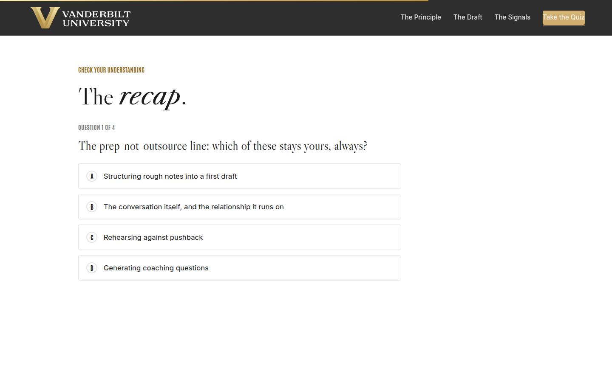
Recap quiz Full 3 min · Core 3
Score the session's knowledge against the objectives before the capstone applies it (Kirkpatrick Level 2).
Say
“Four questions, one per big idea. The systems check before the card.”
Do
- Everyone takes it on their own device, all four questions.
- Hands for 3-or-better; 30-second reteach on anything the room missed.
Validate: Room mode at 3/4 or better.
Watch for: Racing; frame it as the check before the card.
Transition: “Now the only part of today that changes a conversation.”
Core path: Core: keep at full length.
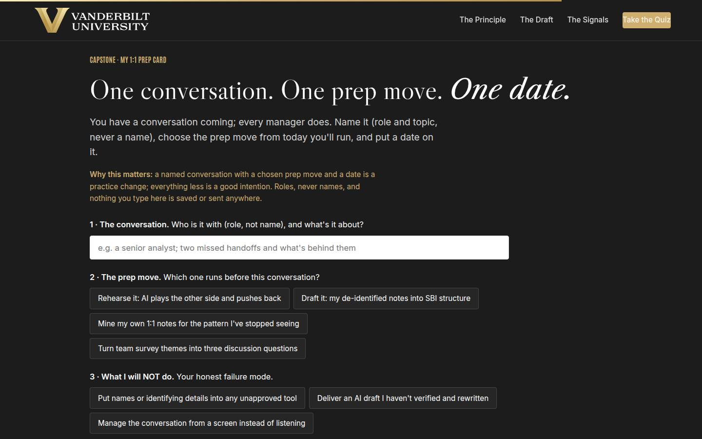
Capstone · My 1:1 prep card Full 5 min · Core 5
Convert the session into one dated prep commitment for a real conversation. The transfer artifact and Level 3 seed.
Say
“Every manager in this room has a conversation coming. Name it, role and topic, never a name. Pick the prep move: the rehearsal, the SBI draft, the notes mine, or the themes move. Then the honest field: what you will NOT do, because you know your failure mode. And the date. A named conversation with a chosen prep and a date is a practice change; everything less is a good intention.”
Do
- Frame it: one conversation, one prep move, one date.
- Repeat the privacy norm before anyone types.
- Give quiet time; circulate for stuck learners: everyone owes someone a conversation.
- Point at field 3, the NOT field, as the honest one.
Ask
“What's most likely to make you skip the prep, and what's your plan for that?”
Expect:
- No time before the meeting
- The conversation feels too small to prep
- Fear of over-scripting
Respond: No time: 'The rehearsal is ten minutes; the unprepped version of this conversation costs more.' Too small: 'Small conversations are where the habit gets built cheap.' Over-scripting: 'The prep ends when the door closes; the card literally says so.'
Debrief: One conversation is about to get a better-prepared, more human version of you. That's the entire promise of the tool.
Validate: Every learner builds a card (all four fields).
Watch for: Vague conversations ('my team, generally'). Push to ONE role and ONE topic.
Transition: “Reference shelf, then the send-off.”
Core path: Core: protect at full length; never cut the capstone.
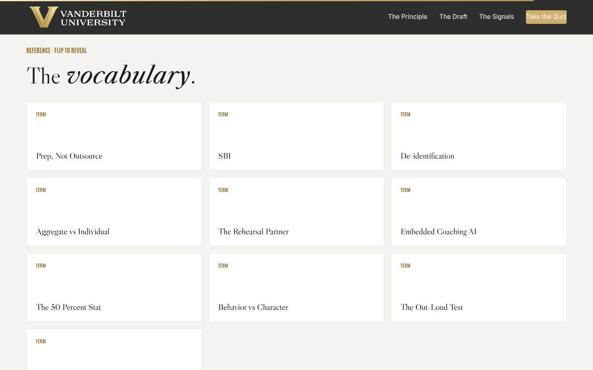
Glossary Full 1 min · Core skip
Signpost the reference layer.
Say
“Every term from today lives here, including the out-loud test, which is the whole ethics section in one question.”
Do
- Flip one card (the Out-Loud Test flips well).
- Tell them it's here whenever they need it.
Validate: None; reference.
Watch for: Don't tour the cards.
Transition: “Last slide. One conversation left.”
Core path: Core: skip; point verbally from the close.
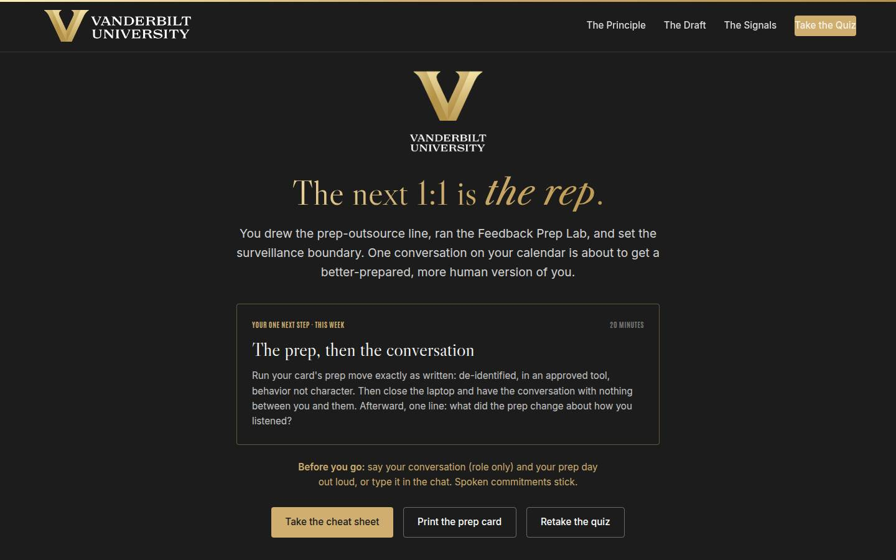
Closing · commitment Full 2 min · Core 2
Convert cards into spoken commitments and capture the Level 1 check.
Say
“The whole session in one breath: AI preps, you converse. De-identified, approved lanes, behavior not character, aggregate not individual. You have a card. Say your conversation, role only, and your prep day out loud. Spoken commitments stick.”
Do
- Read the featured next step: prep, then the conversation, nothing between you and them.
- Fist-to-five on confidence; note the number for your log.
- Commitment round: conversation (role only) and prep day, out loud or in chat.
- Point at the cheat sheet and prep card buttons; tell them the 7-day pulse is coming; stop on time.
Validate: Fist-to-five mostly 3+; a majority state a role and a day.
Watch for: Cards without dates; the round catches them.
Transition: “Go run the prep. Then close the laptop and go be the manager the prep was for.”
Core path: Core: fist-to-five plus a fast round; the ending survives every cut.
Generated from facilitator/notes.json. The on-screen facilitator edition lives at ./ alongside this guide.